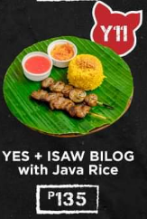

Y1:
A classic combination featuring tender BBQ meat served over fragrant Java rice, offering a delightful blend of smoky flavors and aromatic grains.

Y2:
A double portion of BBQ meat paired with Java rice, perfect for sharing or satisfying larger appetites with its rich BBQ taste and fluffy rice.

Y3:
This dish combines the savory BBQ meat, a juicy hotdog, and Java rice, creating a unique fusion of American and Asian cuisine that's both hearty and flavorful.

Y4:
An adventurous choice that pairs crispy pig ears with BBQ meat and Java rice, offering a textural contrast alongside the traditional BBQ flavor profile.

Y5:
A bold option featuring pig intestines cooked with BBQ sauce and served on top of Java rice, showcasing a mix of traditional BBQ and exotic ingredients.

Y6:
Similar to the pig intestine version but using chicken intestines, this dish offers a lighter yet still adventurous take on BBQ with Java rice.

Y7:
A complex dish that includes both chicken and pork intestines, BBQ meat, a hotdog, and Java rice, blending various textures and flavors in one plate.

Y8:
A simple yet satisfying dish featuring succulent pork belly slices served over Java rice, highlighting the natural sweetness of the pork against the background of the rice.

Y9:
Tender chicken leg quarters are served with Java rice, providing a comforting meal with the robust flavor of the chicken complementing the rice.

Y10:
Crispy fried pork belly pieces are combined with Java rice, offering a crunchy texture against the softness of the rice, enhancing the overall dining experience.

Y11:
A visually appealing dish where circular grilled chicken intestines are served with BBQ and Java rice, presenting a unique presentation style along with the BBQ and rice flavors.

Y12:
Similar to the chicken intestine version but using pork intestines, this dish offers a different texture and flavor profile, all presented in a circular grilled form for added visual appeal.